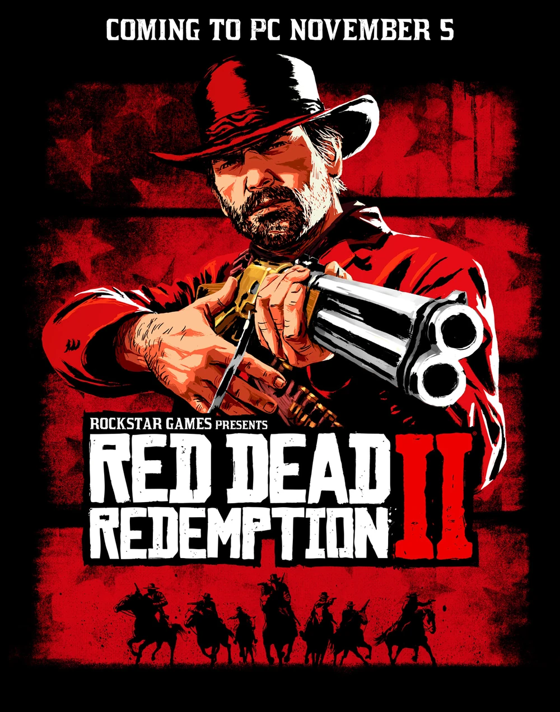
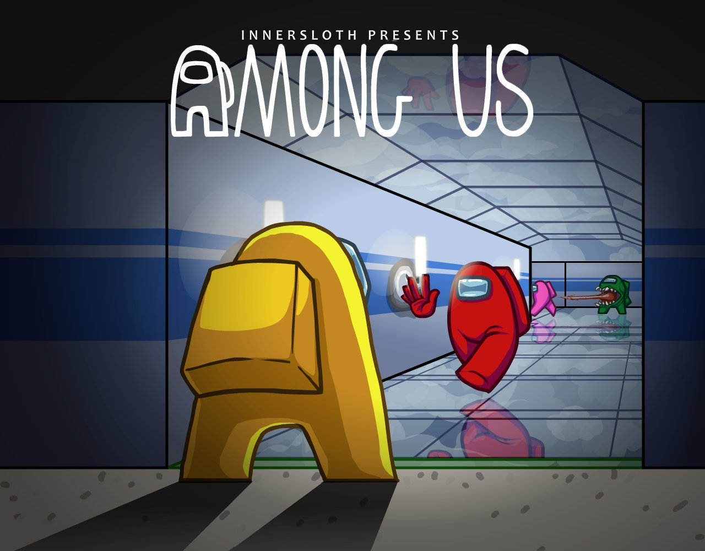
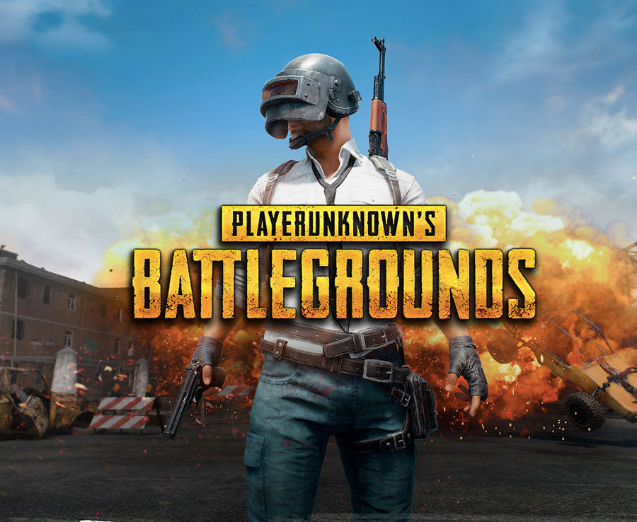
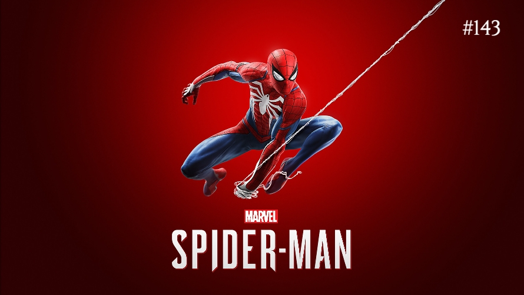
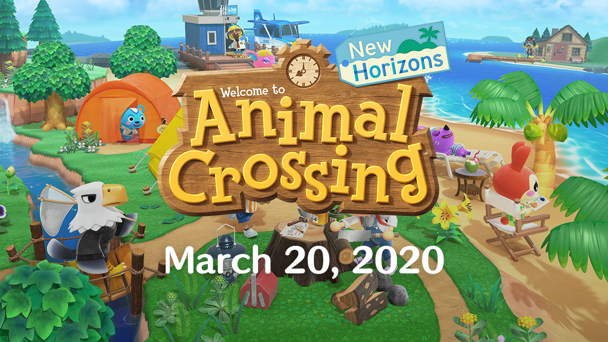

The Legend of Zelda: Breath of the Wild
(2017) es un juego de aventuras y acción que redefinió el género
de mundo abierto. Ambientado en el vasto y misterioso reino de
Hyrule, el jugador asume el papel de Link, quien despierta después
de un largo sueño para enfrentarse al malvado Calamity Ganon. Con una
libertad sin precedentes, los jugadores pueden explorar el extenso mundo,
superar desafiantes acertijos, escalar montañas, volar con paravelas y
luchar contra feroces criaturas. Su cautivadora atmósfera, gráficos
impresionantes y una narrativa emocional hacen de este título un hito
en la historia de los videojuegos.

Red Dead Redemption 2 (2018) es un épico juego
de mundo abierto desarrollado por Rockstar Games. Situado en el
salvaje oeste americano en 1899, sigue la historia de Arthur Morgan,
un forajido y miembro de la banda de Dutch van der Linde. Con una narrativa
rica y emotiva, el juego sumerge a los jugadores en un vasto y detallado
mundo lleno de acción, exploración y decisiones morales. Desde robos a
trenes hasta cazar animales salvajes, cada elección afecta al destino del
protagonista. Con impresionantes gráficos y un profundo sentido de inmersión,
"Red Dead Redemption 2" es una experiencia inolvidable y aclamada por la crítica.

Fortnite (2017) es un popular juego de batalla real
desarrollado por Epic Games. Con un estilo único y colorido, enfrenta a 100
jugadores en una isla donde luchan por ser el último sobreviviente. La
característica distintiva es su mecánica de construcción, que permite a los
jugadores crear estructuras defensivas y ofensivas durante las batallas.
Además, el juego se destaca por sus emocionantes eventos en línea,
colaboraciones con personajes de la cultura pop y temporadas temáticas
que mantienen a la comunidad involucrada y entusiasmada. "Fortnite" se ha
convertido en un fenómeno cultural y ha dejado una huella significativa en
la industria de los videojuegos.

God of War (2018) es un juego de acción y aventuras
desarrollado por Santa Monica Studio y publicado por Sony Interactive
Entertainment. La entrega más reciente de la icónica saga de Kratos
lo lleva a la mitología nórdica mientras se embarca en un emotivo
viaje junto a su hijo, Atreus. Con impresionantes gráficos y una
cámara de un solo plano, el juego sumerge a los jugadores en un mundo
épico lleno de combates intensos, acertijos desafiantes y una narrativa
conmovedora sobre la paternidad y la redención. Con su innovadora jugabilidad
y profunda inmersión en la historia, "God of War" recibió elogios de la crítica
y se convirtió en un clásico instantáneo.

Among Us fue lanzado originalmente en 2018 para
dispositivos móviles, pero solo ganó popularidad masiva en 2020. Es un
exitoso juego de deducción social desarrollado por InnerSloth. En este
juego multijugador en línea, los jugadores asumen roles de tripulantes
de una nave espacial, mientras que algunos son impostores disfrazados.
El objetivo de los impostores es eliminar sigilosamente a la tripulación
y sabotear las tareas, mientras que los tripulantes deben identificar a
los impostores y votarlos fuera de la nave. Con su jugabilidad adictiva
y posibilidad de interacción social, "Among Us" se ha convertido en un
fenómeno cultural y una sensación en la comunidad de videojuegos.

Cyberpunk 2077 es un ambicioso juego de rol de
mundo abierto desarrollado por CD Projekt Red. Ambientado en un futuro
distópico en Night City, los jugadores asumen el papel de V, un mercenario
personalizable que busca fama y fortuna en una metrópolis obsesionada por
la tecnología y el poder corporativo. Con una profunda narrativa y un
vasto mundo lleno de misiones y actividades, el juego ofrece una inmersión
única en un universo futurista y oscuro. Aunque enfrentó problemas técnicos
en su lanzamiento, "Cyberpunk 2077" ha seguido siendo un título influyente
con su impresionante diseño visual y cautivadora experiencia de juego.

PlayerUnknown's Battlegrounds (PUBG) es un juego de
batalla real desarrollado por PUBG Corporation. En este juego multijugador
en línea, 100 jugadores son arrojados en una isla donde luchan por ser el
último superviviente. Los jugadores deben buscar armas, equipo y recursos
mientras se mantienen dentro de la zona segura y evitan la zona de peligro
que se reduce con el tiempo. La estrategia, la habilidad de disparo y la toma
de decisiones rápidas son fundamentales para la supervivencia. Con su innovador
enfoque del género, PUBG desencadenó una fiebre global de batalla real y dejó
una marca duradera en la industria de los videojuegos.

Super Smash Bros. Ultimate es un juego de lucha y acción
desarrollado por Nintendo para la consola Nintendo Switch. Es la culminación
definitiva de la icónica serie "Super Smash Bros." y reúne a todos los personajes,
escenarios y contenido de entregas anteriores, así como nuevos luchadores. Los
jugadores pueden enfrentarse en emocionantes batallas multijugador, ya sea localmente
o en línea, utilizando sus personajes favoritos de los universos de Nintendo y otros
desarrolladores. Con su amplio elenco, frenéticas peleas y la emoción de ver a personajes
icónicos enfrentarse, "Super Smash Bros. Ultimate" ha sido aclamado como uno de los mejores
juegos de lucha y un éxito para la Nintendo Switch.

Marvel's Spider-Man es un juego de acción y aventuras desarrollado
por Insomniac Games en exclusiva para la consola PlayStation 4. En este título,
los jugadores asumen el papel de Peter Parker, también conocido como Spider-Man,
mientras lucha contra el crimen en la ciudad de Nueva York. Con impresionantes gráficos
y una jugabilidad fluida, el juego permite a los jugadores balancearse por la ciudad,
enfrentarse a supervillanos icónicos y completar misiones emocionantes. La narrativa
cautivadora y la autenticidad de los personajes de Marvel hacen de "Marvel's Spider-Man"
una experiencia inolvidable para los fanáticos del superhéroe y los amantes de los juegos
de mundo abierto.

Animal Crossing: New Horizons es un relajante juego de simulación de
vida desarrollado por Nintendo para la consola Nintendo Switch. Los jugadores se embarcan en
una encantadora aventura en una isla desierta, donde pueden crear su paraíso personalizado.
Desde decorar la casa hasta diseñar paisajes y jardines, hay una amplia variedad de actividades
para disfrutar. La jugabilidad en tiempo real, las interacciones con adorables personajes animales
y eventos estacionales hacen que "Animal Crossing: New Horizons" sea una experiencia acogedora y
envolvente. El juego ha sido elogiado por su tranquilidad y por ser un escape perfecto en momentos
de estrés.